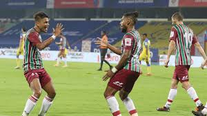
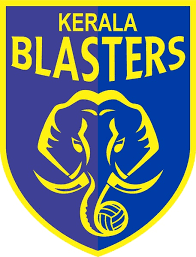

Welcome to the official website of ATK Mohun Bagan FC
ATK Mohun Bagan is the football club of Mohun Bagan Atheltic Club. The team dons the green and maroon jersey and
competes in the Indian Super League, the top division of Indian Football

Men's First Team Matches

5th April, 2022 at Jawaharlal Nehru Stadium
7th April, 2022 at Fatorda Stadium
8th April, 2022 at Jawaharlal Nehru Stadium
10th April, 2022 at Salt Lake Stadium
The upcoming AFC Cup matches will be held in our home-ground, the Yuvabharati Kirangan. Tickets for the same will be
available from the last week of April.
-Official Announcement
Participate in our official giveaways
Win jerseys and tickets by signing up. What are you waiting for, sign up right now